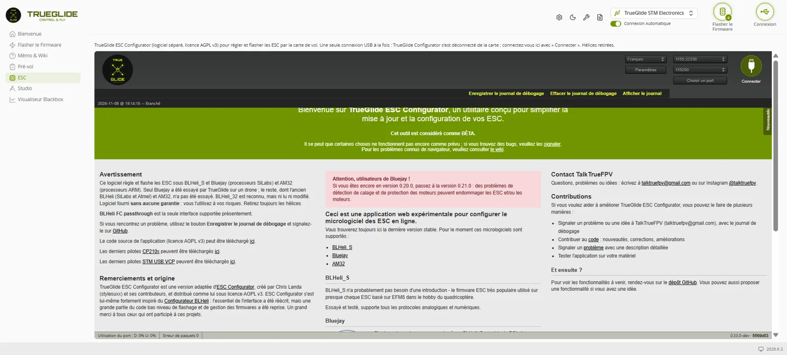

TRUE
TRUEESC
L'onglet ESC (groupe « Installation du drone ») affiche TrueGlide ESC Configurator, un logiciel séparé (licence AGPL v3) adapté d'ESC Configurator. Il lit, règle et flashe les ESC BLHeli_S et Bluejay (processeurs SiLabs) et AM32 (processeurs ARM) en passant par la carte de vol (passerelle BLHeli). Hélices retirées, toujours.

Ce que fait l'onglet ESC
- Une seule connexion USB à la fois : en entrant dans l'onglet, TrueGlide Configurator se déconnecte de la carte ; on se connecte dans l'onglet avec Connecter. En sortant, l'onglet libère le port (refusé pendant une lecture, une écriture ou un flash).
- Batterie branchée pour lire ou écrire : un ESC sans batterie ne répond pas.
- Essayé avec le firmware TRUEGLIDE. Avec Betaflight, la passerelle est la même, mais ce n'est pas encore essayé.
- Enregistrer le journal de débogage (en haut, en jaune) : à joindre à tout signalement de problème.
Lire et régler les ESC
- Connecter, puis Lire les paramètres : chaque ESC s'affiche avec ses réglages.
- Changer le sens de rotation, le mode 3D, le timing ou la puissance de démarrage demande une confirmation.
- Restaurer les paramètres par défaut : une question liste ce qui change ; une sauvegarde des réglages est faite avant, et le sens des moteurs est gardé.
- Recharger des réglages sauvegardés : remet une sauvegarde (fichier « trueglide-esc-reglages_….json ») ; un fichier qui n'est pas une sauvegarde est refusé sans rien écrire.
Flasher les ESC
- Avant chaque flash, les réglages des ESC sont sauvegardés dans un fichier.
- Deux firmwares sont validés par TrueGlide (empreinte SHA-256 vérifiée) : Bluejay 0.19.2, J-H-40, 24 kHz et Bluejay 0.19.2, J-H-40, 48 kHz. Flashez la même fréquence que celle lue sur l'ESC : dans Bluejay 0.19, la fréquence est fixée par le fichier. Les autres firmwares demandent une confirmation « firmware non validé ».
- Un layout qui ne correspond pas à l'ESC est refusé : « non flashé : rien n'a été écrit ».
- AM32 sans nom de fichier en mémoire : refusé, sauf choix en mode avancé. BLHeli_32 est reconnu mais jamais modifié.
Test des moteurs
- Cocher la case des hélices retirées, puis le test. Valeurs limitées : 1000 à 1300, ou 1350 à 1650 en 3D.
- Les moteurs s'arrêtent en moins d'une seconde quand on clique Déconnecter, Lire les paramètres, qu'on décoche une case, qu'on quitte l'onglet, qu'on ferme ou recharge la page, ou que la page est cachée.
- Pendant une déconnexion, une lecture ou un flash, seul l'ordre d'arrêt est envoyé.
Ce qui est essayé
Essais au banc du 8 novembre 2026 (SpeedyBee F405 Mini, 4 ESC BLHeli_S 35 A) : lecture, écriture, flash Bluejay 0.19.2 J-H-40, refus d'un mauvais layout, sauvegarde et rechargement des réglages, arrêts des moteurs (Q0 à Q5), tous OK. Le 10 novembre : flash coupé deux fois exprès (câble USB débranché, puis batterie débranchée) ; l'ESC, lu « FLASH*FAILED », a été reflashé avec succès (Bluejay 0.19.2 J-H-40 48 kHz) et ses réglages rechargés depuis la sauvegarde. Pas encore essayé : AM32 sur un vrai ESC.